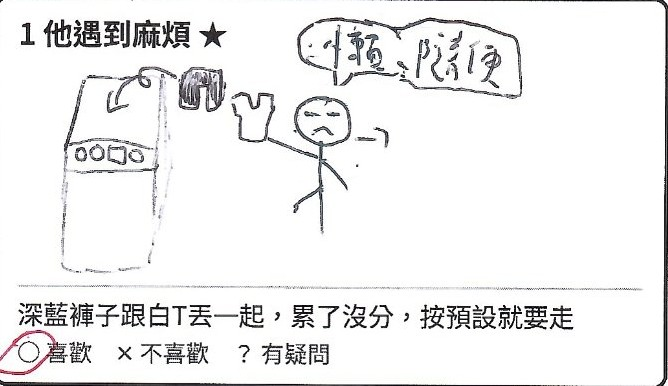
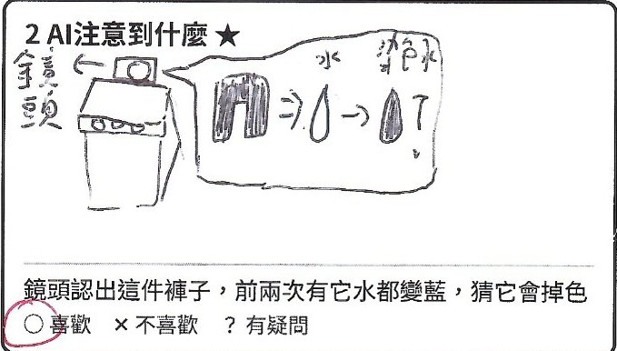
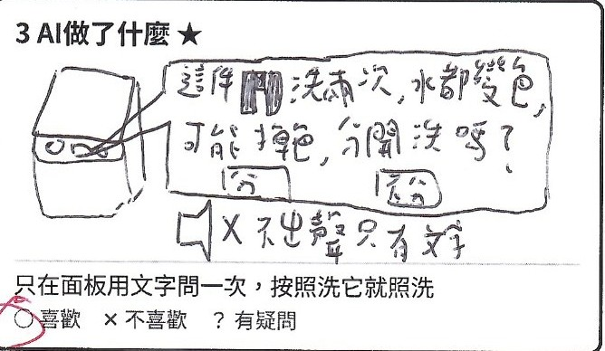
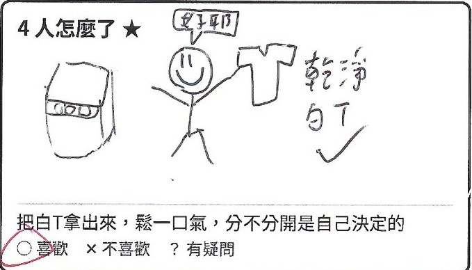
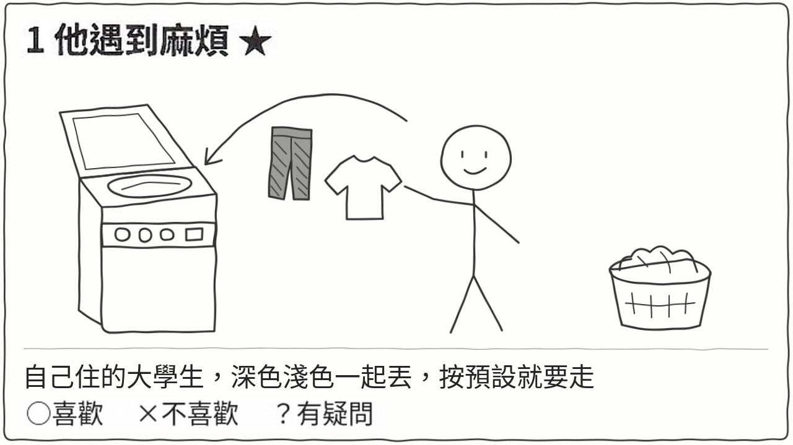

01
起點
1 / 7
我是地表最強那間AI公司
前瞻應用中心的主管
任務：讓更多人第一次用到AI
我選了
洗衣機
按鈕很多，多數人只用預設
洗的時候通常沒人在旁邊看
衣服洗壞，要拿出來才發現
02
去問（第一輪）
2 / 7
我原本以為
使用者不知道洗衣機該怎麼設定
第一輪，AI扮演的使用者「小安」說
「知道可以調脫水，
只是怕衣服被絞太皺，所以不敢改」
所以問題不在不會設定，而在不敢改
03
去問、給他用（第二輪）
3 / 7
推翻
朋友看到第3格時說
「一個小的面板跟你
顯示文字，然後問我
……要不要更改」
被推翻的想法
AI可以不先問，
自動幫她改設定
04
給他用（第三輪）
4 / 7
在洗衣機前面
她畫的一天




我問她：假設AI在面板上跳出這段話
我有看過你這件衣服
前兩次有它的時候
水都會變成其他顏色
問她會怎麼辦，她第一句就說
「重新洗」
接著說「要拿出來重新洗」
小安跟我媽，最怕的事不一樣
小安怕衣服被絞皺，我媽怕衛生紙屑黏在黑衣服上
05
說清楚、想辦法
5 / 7
第一輪 小安
「怕衣服被絞太皺，所以不敢改」
第二輪 朋友（問她試過其他模式嗎）
「沒有，完全沒有」
第三輪 我媽
「以我們來說洗衣服是很簡單的事情，所以不需要AI」
洞見
我媽有經驗，丟進去前會先檢查，所以她覺得不需要AI
她說年輕人需要，這點還要再去驗證
我們可以怎麼
讓沒什麼洗衣經驗的年輕人，
在衣服丟進去之前就知道哪些要分開、哪些要先檢查？
06
回頭看
6 / 7
夢想家
我會從日常習慣追問，找出使用者在意的事
第三輪：我媽先說洗衣服「沒有什麼心情」，繼續問才說出她怕衛生紙屑
設計師
我會根據使用者的反應，調整AI提醒的方式
第二輪：朋友說「直接問有點恐怖」，第三輪分鏡改成只在面板顯示文字
工匠
我能把想法先做成別人可以操作的原型
第一輪：做成互動網頁放上GitHub，點洗衣機會顯示脫水分鐘數
上一版四格分鏡
07
回頭修改
7 / 7
我改了第
1
格：換成剛開始自己住的大學生

為什麼改
我媽說她
不需要AI
，她覺得年輕人才需要
年輕人洗衣服沒有經驗，根本不會分配
下一步
帶新版分鏡，找剛開始自己住的洗衣新手測試
確認他們是否真的需要這種提醒，以及提醒有沒有幫助